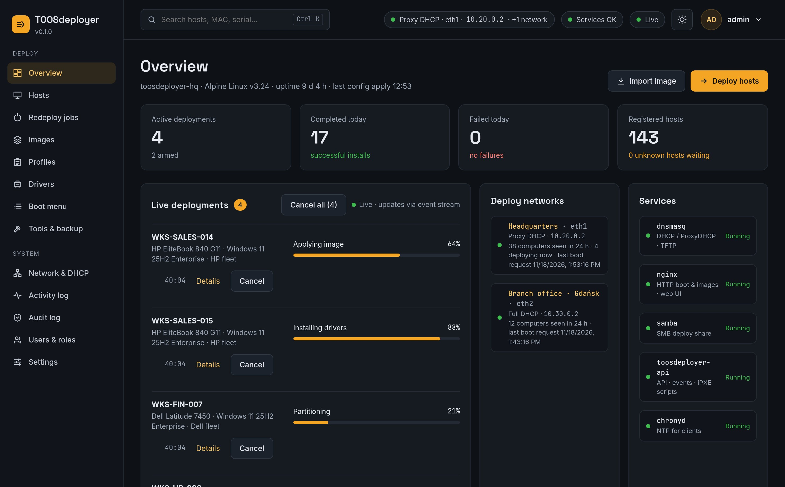
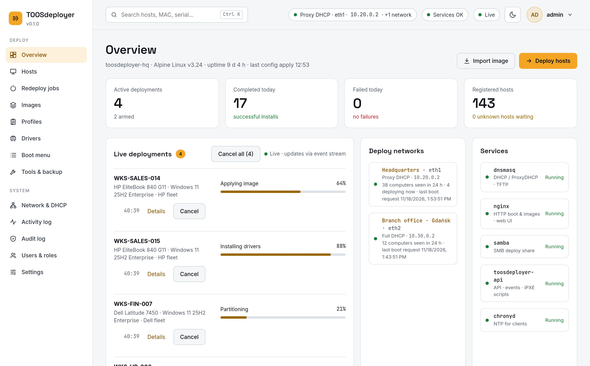
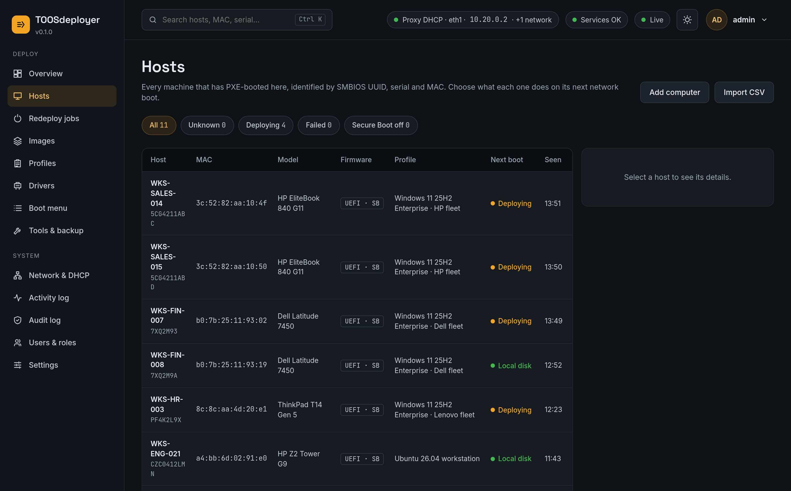
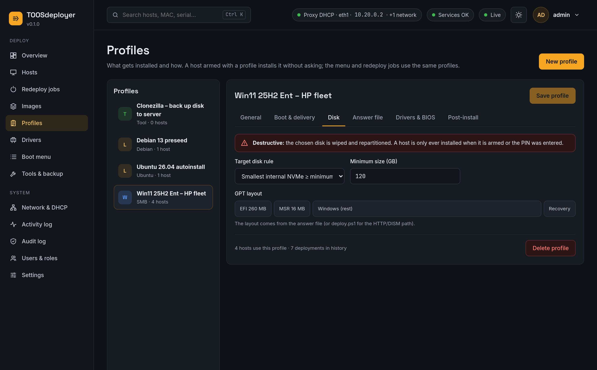
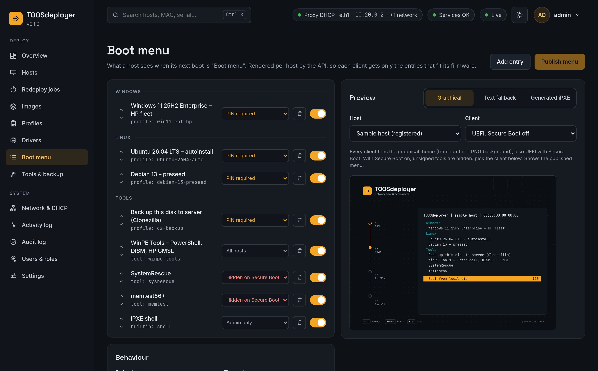
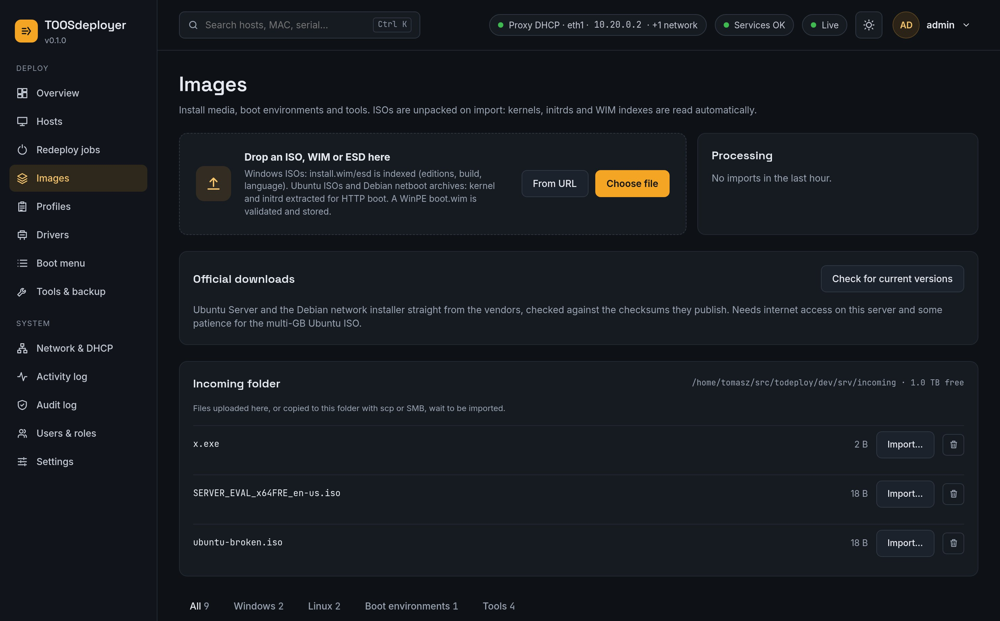
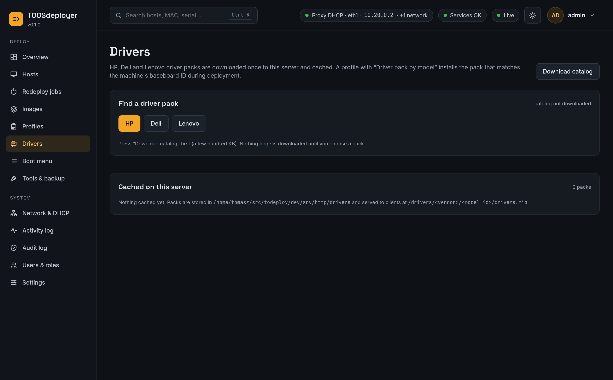
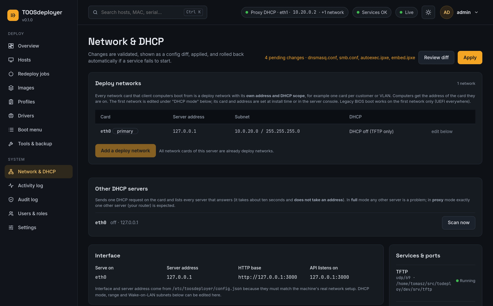

<title>TOOSdeployer</title>
<meta name="claude:viewport-fit-sides" content="cover">
<meta name="description" content="TOOSdeployer is a self-contained network deployment server: unattended Windows 11, Ubuntu, Debian and Rocky Linux installs over PXE, with Secure Boot, safety interlocks and a modern web console.">
<link rel="preconnect" href="https://fonts.googleapis.com">
<link rel="preconnect" href="https://fonts.gstatic.com" crossorigin>
<link rel="stylesheet" href="https://fonts.googleapis.com/css2?family=Manrope:wght@500;700;800&family=Inter:wght@400;500;600&family=JetBrains+Mono:wght@500;600&display=swap">
<style>
/* Layout concept: one long dark "control room" page. A quiet engineering grid behind a hero built around the real console; amber is the only loud colour, green marks a healthy state. */
:root{
  --bg:#0a0c10; --bg2:#0e1117; --surface:#12161e; --surface2:#171c26; --line:#232a37; --line2:#2e3747;
  --fg:#e9ecf3; --muted:#9aa3b5; --faint:#6b7488;
  --accent:#f5a524; --accent-ink:#1a1204; --accent-soft:rgba(245,165,36,.12);
  --ok:#3fb86a; --ok-soft:rgba(63,184,106,.14);
  --glow:rgba(245,165,36,.18); --grid:rgba(255,255,255,.035); --shadow:0 30px 80px -20px rgba(0,0,0,.65);
  --show-dark:block; --show-light:none;
  --display:"Manrope","Segoe UI",system-ui,sans-serif; --text:"Inter","Segoe UI",system-ui,sans-serif; --mono:"JetBrains Mono",ui-monospace,Menlo,Consolas,monospace;
  --maxw:1240px;
}
@media (prefers-color-scheme: light){:root:not([data-theme="dark"]){
  --bg:#f6f4ef; --bg2:#efece5; --surface:#ffffff; --surface2:#f2efe8; --line:#e0dbd0; --line2:#cfc8b9;
  --fg:#15171c; --muted:#555c6b; --faint:#808697;
  --accent:#d98a00; --accent-ink:#ffffff; --accent-soft:rgba(217,138,0,.12);
  --ok:#1f8f4c; --ok-soft:rgba(31,143,76,.12);
  --glow:rgba(217,138,0,.16); --grid:rgba(20,24,34,.05); --shadow:0 30px 70px -25px rgba(30,25,10,.35);
  --show-dark:none; --show-light:block; color-scheme:light}}
:root[data-theme="light"]{
  --bg:#f6f4ef; --bg2:#efece5; --surface:#ffffff; --surface2:#f2efe8; --line:#e0dbd0; --line2:#cfc8b9;
  --fg:#15171c; --muted:#555c6b; --faint:#808697;
  --accent:#d98a00; --accent-ink:#ffffff; --accent-soft:rgba(217,138,0,.12);
  --ok:#1f8f4c; --ok-soft:rgba(31,143,76,.12);
  --glow:rgba(217,138,0,.16); --grid:rgba(20,24,34,.05); --shadow:0 30px 70px -25px rgba(30,25,10,.35);
  --show-dark:none; --show-light:block; color-scheme:light}
:root{color-scheme:dark}
*{box-sizing:border-box}
html{scroll-behavior:smooth}
body{margin:0;background:var(--bg);color:var(--fg);font:400 17px/1.6 var(--text);-webkit-font-smoothing:antialiased;overflow-x:clip}
img{max-width:100%;display:block}
a{color:inherit}
h1,h2,h3{font-family:var(--display);margin:0;text-wrap:balance;letter-spacing:-.025em;line-height:1.08}
p{margin:0;text-wrap:pretty}
.wrap{max-width:calc(var(--maxw) + 2*max(16px,env(safe-area-inset-left,0px)));margin:0 auto;padding-left:max(16px,env(safe-area-inset-left,0px));padding-right:max(16px,env(safe-area-inset-right,0px))}
.eyebrow{font:600 12.5px/1 var(--mono);letter-spacing:.16em;text-transform:uppercase;color:var(--accent);display:flex;align-items:center;gap:10px}
.eyebrow::before{content:"";width:22px;height:2px;background:var(--accent);border-radius:2px}
.sec{padding-block:112px;position:relative}
.sec h2{font-size:clamp(34px,4.6vw,58px);font-weight:800;max-width:17ch}
.sec .lead{font-size:clamp(17px,1.5vw,20px);color:var(--muted);max-width:60ch;margin-top:22px}
.head{display:flex;flex-direction:column;gap:20px}
.btn{display:inline-flex;align-items:center;gap:10px;height:52px;padding:0 24px;border-radius:12px;font:700 16px/1 var(--display);text-decoration:none;border:1px solid var(--line2);background:var(--surface);color:var(--fg);transition:transform .2s,border-color .2s,background .2s}
.btn:hover{transform:translateY(-2px);border-color:var(--accent)}
.btn.pri{background:var(--accent);color:var(--accent-ink);border-color:var(--accent)}
.btn.pri:hover{background:var(--accent);filter:brightness(1.08)}
.btn:focus-visible,.tab:focus-visible,summary:focus-visible,.theme:focus-visible,a:focus-visible{outline:2px solid var(--accent);outline-offset:3px}
svg.i{width:22px;height:22px;fill:none;stroke:currentColor;stroke-width:1.7;stroke-linecap:round;stroke-linejoin:round;flex:none}

/* header */
.top{position:sticky;top:env(safe-area-inset-top,0px);z-index:50;background:color-mix(in srgb,var(--bg) 82%,transparent);backdrop-filter:blur(14px);-webkit-backdrop-filter:blur(14px);border-bottom:1px solid var(--line)}
body::before{content:"";position:fixed;inset:0 0 auto;height:env(safe-area-inset-top,0px);z-index:60;background:var(--bg)}
.nav{display:flex;align-items:center;gap:28px;height:72px}
.brand{display:flex;align-items:center;gap:12px;font:800 21px/1 var(--display);letter-spacing:-.02em;text-decoration:none}
.mark{width:34px;height:34px;border-radius:9px;background:var(--accent);color:var(--accent-ink);display:grid;place-items:center}
.nav ul{display:flex;gap:26px;list-style:none;margin:0 0 0 auto;padding:0}
.nav ul a{text-decoration:none;color:var(--muted);font:500 15px/1 var(--text);transition:color .2s}
.nav ul a:hover{color:var(--fg)}
.theme{all:unset;cursor:pointer;width:42px;height:42px;display:grid;place-items:center;border-radius:11px;border:1px solid var(--line2);color:var(--muted);background:var(--surface)}
.theme:hover{color:var(--fg)}
.nav .btn{height:42px;padding:0 18px;font-size:15px}

/* hero */
.hero{padding-top:80px;padding-bottom:70px;overflow:hidden}
.hero::before{content:"";position:absolute;inset:0;background-image:linear-gradient(var(--grid) 1px,transparent 1px),linear-gradient(90deg,var(--grid) 1px,transparent 1px);background-size:56px 56px;mask-image:radial-gradient(ellipse 80% 70% at 50% 25%,#000 30%,transparent 78%);-webkit-mask-image:radial-gradient(ellipse 80% 70% at 50% 25%,#000 30%,transparent 78%);pointer-events:none}
.hero::after{content:"";position:absolute;left:50%;top:-180px;width:900px;height:520px;transform:translateX(-50%);background:radial-gradient(closest-side,var(--glow),transparent);pointer-events:none}
.hero .wrap{position:relative;z-index:1}
.hero h1{font-size:clamp(42px,7.2vw,92px);font-weight:800;max-width:15ch;letter-spacing:-.035em;line-height:1.02}
.hero h1 em{font-style:normal;color:var(--accent)}
.hero .sub{margin-top:30px;font-size:clamp(18px,1.7vw,22px);color:var(--muted);max-width:56ch}
.cta{display:flex;flex-wrap:wrap;gap:14px;margin-top:38px}
.facts{display:grid;grid-template-columns:repeat(4,1fr);gap:0;margin-top:64px;border:1px solid var(--line);border-radius:16px;background:var(--surface);overflow:hidden}
.facts div{padding:22px 24px;border-right:1px solid var(--line);min-width:0}
.facts div:last-child{border-right:0}
.facts b{display:block;font:700 18px/1.25 var(--display);letter-spacing:-.01em}
.facts span{display:block;margin-top:6px;font-size:14px;color:var(--muted);line-height:1.45}
.stage{position:relative;margin-top:72px}
.win{border:1px solid var(--line2);border-radius:16px;background:var(--surface);box-shadow:var(--shadow);overflow:hidden}
.win .bar{display:flex;align-items:center;gap:8px;height:42px;padding:0 16px;background:var(--surface2);border-bottom:1px solid var(--line)}
.win .bar i{width:11px;height:11px;border-radius:50%;background:var(--line2)}
.win .bar span{margin-left:14px;font:500 12.5px/1 var(--mono);color:var(--faint);padding:7px 14px;border-radius:8px;background:var(--bg);border:1px solid var(--line);min-width:0;overflow:hidden;text-overflow:ellipsis;white-space:nowrap}
.win img{width:100%;height:auto}
.shot-dark{display:var(--show-dark)} .shot-light{display:var(--show-light)}
.live{position:absolute;left:-18px;bottom:44px;width:min(330px,70%);padding:18px 20px;border-radius:14px;border:1px solid var(--line2);background:var(--surface);box-shadow:var(--shadow);animation:rise .9s .5s cubic-bezier(.2,.8,.2,1) backwards}
.live .row{display:flex;justify-content:space-between;gap:12px;font:600 14px/1.3 var(--display)}
.live .row small{font:500 12px/1.3 var(--mono);color:var(--ok);display:flex;align-items:center;gap:7px}
.live .row small::before{content:"";width:8px;height:8px;border-radius:50%;background:var(--ok);box-shadow:0 0 0 0 var(--ok);animation:pulse 2s infinite}
.live p{font-size:13px;color:var(--muted);margin-top:4px}
.meter{height:7px;border-radius:7px;background:var(--line);margin-top:14px;overflow:hidden}
.meter u{display:block;height:100%;width:64%;border-radius:7px;background:var(--accent);animation:fill 6s ease-in-out infinite alternate}
.hero .win{animation:rise .9s cubic-bezier(.2,.8,.2,1) backwards}
@keyframes rise{from{opacity:0;transform:translateY(24px)}}
@keyframes pulse{70%{box-shadow:0 0 0 8px transparent}100%{box-shadow:0 0 0 0 transparent}}
@keyframes fill{from{width:34%}to{width:92%}}

/* supports */
.band{border-block:1px solid var(--line);background:var(--bg2)}
.band .wrap{display:flex;flex-wrap:wrap;gap:12px 34px;align-items:center;padding-block:26px}
.band small{font:600 12px/1 var(--mono);letter-spacing:.14em;text-transform:uppercase;color:var(--faint)}
.band span{font:600 17px/1 var(--display);color:var(--muted)}

/* steps */
.steps{display:grid;grid-template-columns:repeat(4,1fr);gap:20px;margin-top:64px;counter-reset:s}
.step{position:relative;padding:28px 26px 30px;border:1px solid var(--line);border-radius:16px;background:var(--surface);min-width:0}
.step::before{counter-increment:s;content:"0" counter(s);font:600 13px/1 var(--mono);color:var(--accent);letter-spacing:.1em}
.step h3{font-size:22px;margin-top:22px;font-weight:700;letter-spacing:-.015em}
.step p{margin-top:12px;color:var(--muted);font-size:15.5px}
.step:not(:last-child)::after{content:"";position:absolute;right:-21px;top:38px;width:22px;height:2px;background:linear-gradient(90deg,var(--line2),var(--accent))}

/* speed */
.speed{background:var(--bg2);border-block:1px solid var(--line)}
.speedgrid{display:grid;grid-template-columns:1fr 1.15fr;gap:64px;align-items:center}
.pipeline{border:1px solid var(--line2);border-radius:16px;background:var(--surface);padding:22px;box-shadow:var(--shadow)}
.pipeline h4{margin:0 0 16px;font:600 12.5px/1 var(--mono);letter-spacing:.14em;text-transform:uppercase;color:var(--faint);display:flex;justify-content:space-between}
.job{display:grid;grid-template-columns:132px 1fr 46px;gap:14px;align-items:center;padding:13px 0;border-top:1px solid var(--line)}
.job b{font:600 13.5px/1.2 var(--mono)}
.job .m{height:8px;border-radius:8px;background:var(--line);overflow:hidden}
.job .m u{display:block;height:100%;width:0;border-radius:8px;background:var(--accent);transition:width 1.1s ease}
.job .m u.done{background:var(--ok)}
.job em{font:600 12.5px/1 var(--mono);font-style:normal;text-align:right;color:var(--muted)}
.job small{grid-column:2/4;margin-top:-4px;font-size:12.5px;color:var(--faint)}
.chain{display:flex;flex-wrap:wrap;gap:8px;margin-top:30px}
.chain span{padding:9px 14px;border-radius:999px;border:1px solid var(--line2);background:var(--surface);font:600 13.5px/1 var(--display);color:var(--muted)}
.chain span:not(:last-child)::after{content:"→";margin-left:12px;color:var(--accent)}
.points{display:grid;gap:18px;margin-top:34px}
.points div{display:flex;gap:16px;align-items:flex-start}
.points .ic{width:44px;height:44px;border-radius:12px;background:var(--accent-soft);color:var(--accent);display:grid;place-items:center;flex:none}
.points b{display:block;font:700 17px/1.3 var(--display)}
.points span{display:block;color:var(--muted);font-size:15.5px;margin-top:3px}

/* features */
.bento{display:grid;grid-template-columns:repeat(6,1fr);gap:20px;margin-top:64px}
.tile{border:1px solid var(--line);border-radius:18px;background:var(--surface);overflow:hidden;display:flex;flex-direction:column;min-width:0;transition:border-color .25s,transform .25s}
.tile:hover{border-color:var(--line2);transform:translateY(-3px)}
.tile .txt{padding:28px 28px 22px}
.tile h3{font-size:23px;font-weight:700;letter-spacing:-.015em}
.tile p{margin-top:10px;color:var(--muted);font-size:15.5px}
.tile .pic{margin-top:auto;border-top:1px solid var(--line);background:var(--bg2);overflow:hidden;aspect-ratio:16/8.4}
.tile .pic img{width:100%;height:100%;object-fit:cover;object-position:left top}
.tile.no-pic .txt{height:100%}
.t6{grid-column:span 6}.t4{grid-column:span 4}.t3{grid-column:span 3}.t2{grid-column:span 2}
.tile.wide{flex-direction:row}
.tile.wide .txt{flex:1;display:flex;flex-direction:column;justify-content:center;padding:44px}
.tile.wide .txt h3{font-size:clamp(26px,3vw,36px)}
.tile.wide .pic{flex:1.4;border-top:0;border-left:1px solid var(--line);aspect-ratio:auto;min-height:340px}
.tag{display:inline-flex;margin-top:16px;padding:6px 11px;border-radius:7px;background:var(--accent-soft);color:var(--accent);font:600 12px/1 var(--mono);letter-spacing:.06em;width:max-content}
.ul{list-style:none;margin:16px 0 0;padding:0;display:grid;gap:8px}
.ul li{display:flex;gap:10px;font-size:15px;color:var(--muted)}
.ul li::before{content:"";width:6px;height:6px;border-radius:50%;background:var(--accent);margin-top:9px;flex:none}

/* security */
.secure{background:var(--bg2);border-block:1px solid var(--line)}
.secgrid{display:grid;grid-template-columns:repeat(3,1fr);gap:20px;margin-top:64px}
.card{padding:28px;border:1px solid var(--line);border-radius:16px;background:var(--surface);min-width:0}
.card .ic{width:46px;height:46px;border-radius:12px;background:var(--accent-soft);color:var(--accent);display:grid;place-items:center}
.card h3{font-size:20px;font-weight:700;margin-top:22px;letter-spacing:-.012em}
.card p{margin-top:10px;color:var(--muted);font-size:15.5px}
.safety{margin-top:20px;border:1px solid var(--line2);border-radius:18px;background:var(--surface);display:grid;grid-template-columns:1fr 2fr;overflow:hidden}
.safety .l{padding:34px;border-right:1px solid var(--line);background:linear-gradient(160deg,var(--accent-soft),transparent 70%)}
.safety h3{font-size:30px;font-weight:800}
.safety .l p{margin-top:14px;color:var(--muted);font-size:16px}
.gates{display:grid;grid-template-columns:1fr 1fr}
.gate{padding:26px 30px;border-bottom:1px solid var(--line);border-right:1px solid var(--line);min-width:0}
.gate:nth-child(2n){border-right:0}.gate:nth-last-child(-n+2){border-bottom:0}
.gate b{display:flex;gap:10px;align-items:center;font:700 16.5px/1.3 var(--display)}
.gate b::before{content:"";width:9px;height:9px;border-radius:50%;background:var(--ok);box-shadow:0 0 0 4px var(--ok-soft);flex:none}
.gate span{display:block;margin-top:8px;font-size:15px;color:var(--muted)}

/* gallery */
.gallery{display:grid;grid-template-columns:300px 1fr;gap:36px;margin-top:60px;align-items:start}
.tabs{display:grid;gap:8px;position:sticky;top:96px}
.tab{all:unset;box-sizing:border-box;cursor:pointer;padding:16px 18px;border-radius:12px;border:1px solid transparent;transition:background .2s,border-color .2s}
.tab b{display:block;font:700 16px/1.25 var(--display)}
.tab span{display:block;margin-top:4px;font-size:14px;color:var(--faint);line-height:1.45}
.tab:hover{background:var(--surface)}
.tab[aria-selected="true"]{background:var(--surface);border-color:var(--accent)}
.tab[aria-selected="true"] b{color:var(--accent)}
.view .win img{aspect-ratio:2960/1840;object-fit:cover;object-position:top}
.view figcaption{margin-top:16px;font-size:15px;color:var(--muted);max-width:70ch}

/* platforms */
.plat{display:grid;grid-template-columns:repeat(3,1fr);gap:20px;margin-top:64px}
.pcard{padding:30px;border:1px solid var(--line);border-radius:16px;background:var(--surface);min-width:0}
.pcard h3{font-size:22px;font-weight:700}
.pcard .k{font:600 12.5px/1 var(--mono);letter-spacing:.12em;text-transform:uppercase;color:var(--accent);margin-bottom:14px;display:block}

/* faq */
.faq{display:grid;grid-template-columns:1fr 1.5fr;gap:70px;align-items:start}
details{border-top:1px solid var(--line);padding:4px 0}
details:last-child{border-bottom:1px solid var(--line)}
summary{list-style:none;cursor:pointer;display:flex;justify-content:space-between;gap:20px;align-items:center;padding:22px 0;font:700 19px/1.3 var(--display);letter-spacing:-.01em}
summary::-webkit-details-marker{display:none}
summary::after{content:"+";font:500 26px/1 var(--mono);color:var(--accent);flex:none;transition:transform .25s}
details[open] summary::after{transform:rotate(45deg)}
details p{padding:0 0 24px;color:var(--muted);font-size:16.5px;max-width:62ch}

/* closing */
.closing{padding-block:100px}
.panel{position:relative;overflow:hidden;border:1px solid var(--line2);border-radius:24px;padding:clamp(34px,6vw,84px);background:var(--surface)}
.panel::before{content:"";position:absolute;inset:0;background-image:linear-gradient(var(--grid) 1px,transparent 1px),linear-gradient(90deg,var(--grid) 1px,transparent 1px);background-size:44px 44px;mask-image:radial-gradient(ellipse 70% 90% at 85% 0%,#000,transparent 70%);-webkit-mask-image:radial-gradient(ellipse 70% 90% at 85% 0%,#000,transparent 70%)}
.panel::after{content:"";position:absolute;right:-120px;top:-160px;width:520px;height:520px;background:radial-gradient(closest-side,var(--glow),transparent)}
.panel>*{position:relative;z-index:1}
.panel h2{font-size:clamp(34px,5vw,64px);font-weight:800;max-width:16ch}
.panel p{margin-top:22px;color:var(--muted);max-width:56ch;font-size:19px}
footer{border-top:1px solid var(--line);padding-block:44px 56px;color:var(--faint);font-size:14.5px}
footer .wrap{display:flex;flex-wrap:wrap;gap:16px 40px;justify-content:space-between;align-items:center}
footer .links{display:flex;gap:24px;flex-wrap:wrap}
footer a{text-decoration:none;color:var(--muted)}footer a:hover{color:var(--fg)}

@media (max-width:1100px){
  .nav ul{display:none}.nav .btn{margin-left:auto}
  .facts{grid-template-columns:1fr 1fr}.facts div:nth-child(2){border-right:0}.facts div:nth-child(-n+2){border-bottom:1px solid var(--line)}
  .steps{grid-template-columns:1fr 1fr}.step:nth-child(2)::after{display:none}
  .speedgrid{grid-template-columns:1fr;gap:48px}
  .t4,.t3,.t2{grid-column:span 6}.tile.wide{flex-direction:column}.tile.wide .pic{border-left:0;border-top:1px solid var(--line);min-height:0;aspect-ratio:16/8.4}.tile.wide .txt{padding:30px}
  .secgrid{grid-template-columns:1fr 1fr}.safety{grid-template-columns:1fr}.safety .l{border-right:0;border-bottom:1px solid var(--line)}
  .gallery{grid-template-columns:1fr}.tabs{position:static;grid-auto-flow:column;grid-auto-columns:minmax(170px,1fr);overflow-x:auto;padding-bottom:6px}.tab span{display:none}
  .plat{grid-template-columns:1fr}.faq{grid-template-columns:1fr;gap:34px}
  .live{left:12px;bottom:-26px}
}
@media (max-width:640px){
  body{font-size:16px}.sec{padding-block:76px}
  .steps,.secgrid{grid-template-columns:1fr}.step::after{display:none}
  .gates{grid-template-columns:1fr}.gate{border-right:0}.gate:nth-last-child(2){border-bottom:1px solid var(--line)}
  .facts{grid-template-columns:1fr}.facts div{border-right:0;border-bottom:1px solid var(--line)}.facts div:last-child{border-bottom:0}
  .job{grid-template-columns:100px 1fr 40px}
  .hero{padding-top:44px}.hero .wrap>.stage{margin-top:56px}.live{display:none}
}
@media (prefers-reduced-motion: reduce){*{animation:none!important;transition:none!important}html{scroll-behavior:auto}}
</style>

<svg width="0" height="0" style="position:absolute" aria-hidden="true">
  <defs>
    <symbol id="i-arrow" viewBox="0 0 24 24"><path d="M5 12h14M13 6l6 6-6 6"/></symbol>
    <symbol id="i-shield" viewBox="0 0 24 24"><path d="M12 3l8 3v6c0 4.5-3.2 8-8 9-4.8-1-8-4.5-8-9V6z"/><path d="M9 12l2.2 2.2L15.5 10"/></symbol>
    <symbol id="i-lock" viewBox="0 0 24 24"><rect x="5" y="11" width="14" height="9" rx="2"/><path d="M8 11V8a4 4 0 018 0v3"/></symbol>
    <symbol id="i-key" viewBox="0 0 24 24"><circle cx="8" cy="15" r="4"/><path d="M11 12l8-8M16 7l3 3M14 9l2 2"/></symbol>
    <symbol id="i-user" viewBox="0 0 24 24"><circle cx="9" cy="8" r="3.5"/><path d="M2.5 20c.6-3.6 3.2-5.5 6.5-5.5s5.9 1.9 6.5 5.5"/><path d="M17 5.5a3 3 0 010 5.8M18.5 14.8c1.7.6 2.7 2.3 3 4.7"/></symbol>
    <symbol id="i-bolt" viewBox="0 0 24 24"><path d="M13 2L4 14h7l-1 8 9-12h-7z"/></symbol>
    <symbol id="i-layers" viewBox="0 0 24 24"><path d="M12 3l9 5-9 5-9-5z"/><path d="M3 13l9 5 9-5"/></symbol>
    <symbol id="i-monitor" viewBox="0 0 24 24"><rect x="3" y="4" width="18" height="12" rx="2"/><path d="M8 20h8M12 16v4"/></symbol>
    <symbol id="i-server" viewBox="0 0 24 24"><rect x="3" y="4" width="18" height="6.5" rx="2"/><rect x="3" y="13.5" width="18" height="6.5" rx="2"/><path d="M7 7.2h.01M7 16.8h.01"/></symbol>
    <symbol id="i-list" viewBox="0 0 24 24"><path d="M8 6h13M8 12h13M8 18h13M3.5 6h.01M3.5 12h.01M3.5 18h.01"/></symbol>
    <symbol id="i-power" viewBox="0 0 24 24"><path d="M12 3v8"/><path d="M6.4 6.6a8 8 0 1011.2 0"/></symbol>
    <symbol id="i-wrench" viewBox="0 0 24 24"><path d="M14.7 6.3a4 4 0 005 5L21 12.6 12.6 21 3 11.4 11.4 3z" transform="translate(0 0) scale(.9) translate(1.2 1.2)"/><path d="M15 9l-6 6"/></symbol>
    <symbol id="i-net" viewBox="0 0 24 24"><rect x="9" y="3" width="6" height="5" rx="1"/><rect x="2.5" y="16" width="6" height="5" rx="1"/><rect x="15.5" y="16" width="6" height="5" rx="1"/><path d="M12 8v4M5.5 16v-4h13v4"/></symbol>
    <symbol id="i-pulse" viewBox="0 0 24 24"><path d="M3 12h4l3-8 4 16 3-8h4"/></symbol>
    <symbol id="i-box" viewBox="0 0 24 24"><path d="M3.5 7.5L12 3l8.5 4.5v9L12 21l-8.5-4.5z"/><path d="M3.5 7.5L12 12l8.5-4.5M12 12v9"/></symbol>
    <symbol id="i-check" viewBox="0 0 24 24"><path d="M5 12.5l4.5 4.5L19 7.5"/></symbol>
    <symbol id="i-sun" viewBox="0 0 24 24"><circle cx="12" cy="12" r="4"/><path d="M12 2v2M12 20v2M2 12h2M20 12h2M4.9 4.9l1.4 1.4M17.7 17.7l1.4 1.4M4.9 19.1l1.4-1.4M17.7 6.3l1.4-1.4"/></symbol>
    <symbol id="i-chip" viewBox="0 0 24 24"><rect x="6" y="6" width="12" height="12" rx="2"/><path d="M9 2v4M15 2v4M9 18v4M15 18v4M2 9h4M2 15h4M18 9h4M18 15h4"/></symbol>
    <symbol id="i-db" viewBox="0 0 24 24"><ellipse cx="12" cy="6" rx="8" ry="3"/><path d="M4 6v6c0 1.7 3.6 3 8 3s8-1.3 8-3V6M4 12v6c0 1.7 3.6 3 8 3s8-1.3 8-3v-6"/></symbol>
  </defs>
</svg>

<header class="top">
  <div class="wrap"><nav class="nav" aria-label="Main">
    <a class="brand" href="#top"><span class="mark"><svg class="i" viewBox="0 0 24 24" style="stroke-width:2.2"><path d="M4 7h10M4 12h14M4 17h10"/><path d="M16 5l4 2-4 2" transform="translate(0 0)"/></svg></span>TOOSdeployer</a>
    <ul>
      <li><a href="#how">How it works</a></li>
      <li><a href="#speed">Speed</a></li>
      <li><a href="#features">Features</a></li>
      <li><a href="#security">Security</a></li>
      <li><a href="#screens">Console</a></li>
      <li><a href="#faq">FAQ</a></li>
    </ul>
    <button class="theme" id="theme" type="button" aria-label="Switch colour theme"><svg class="i"><use href="#i-sun"/></svg></button>
    <a class="btn pri" href="mailto:tomasz.omelaniuk@gmail.com?subject=TOOSdeployer%20-%20more%20details%20needed&body=Hello%2C%0D%0A%0D%0APlease%20send%20me%20more%20information%20about%20TOOSdeployer%2C%20including%3A%0D%0A-%20how%20the%20solution%20works%20and%20a%20demo%0D%0A-%20pricing%0D%0A-%20licensing%0D%0A-%20system%20requirements%20and%20supported%20hardware%0D%0A%0D%0ACompany%3A%0D%0ANumber%20of%20computers%20to%20deploy%3A%0D%0A%0D%0AThank%20you">Talk to us</a>
  </nav></div>
</header>

<main id="top">
<section class="hero sec">
  <div class="wrap">
    <div class="eyebrow">Network deployment appliance</div>
    <h1 style="margin-top:26px">Install a whole fleet <em>from one small server.</em></h1>
    <p class="sub">Boot a computer over the network and Windows 11, Ubuntu, Debian or Rocky Linux installs itself. Unattended, Secure Boot ready, and with safeguards that keep it from ever wiping the wrong machine.</p>
    <div class="cta">
      <a class="btn pri" href="#screens">See the console <svg class="i"><use href="#i-arrow"/></svg></a>
      <a class="btn" href="#security">Read the security model</a>
    </div>
    <div class="facts">
      <div><b>BIOS, UEFI, Secure Boot</b><span>One boot chain for old and new hardware.</span></div>
      <div><b>Windows, Linux, tools</b><span>Windows 11, Ubuntu, Debian, Rocky and RHEL family.</span></div>
      <div><b>HP, Dell, Lenovo</b><span>Driver packs picked by computer model.</span></div>
      <div><b>On your premises</b><span>Your network, your server, your data. No cloud account.</span></div>
    </div>
    <div class="stage">
      <div class="win"><div class="bar"><i></i><i></i><i></i><span>https://toosdeployer-hq/</span></div>
        
        
      </div>
      <div class="live" aria-hidden="true">
        <div class="row"><span>WKS-SALES-014</span><small>INSTALLING</small></div>
        <p>HP EliteBook 840 G11 · Windows 11 25H2</p>
        <div class="meter"><u></u></div>
      </div>
    </div>
  </div>
</section>

<div class="band"><div class="wrap">
  <small>Installs and tools</small>
  <span>Windows 11</span><span>Ubuntu 26.04</span><span>Debian 13</span><span>Rocky · Alma · RHEL</span><span>Clonezilla</span><span>SystemRescue</span><span>memtest86+</span>
</div></div>

<section class="sec" id="how">
  <div class="wrap">
    <div class="head"><div class="eyebrow">How it works</div><h2>From a bare computer to a finished install in four steps.</h2>
      <p class="lead">No agent on the computers, no USB sticks to prepare. The computer asks the network how to boot, and TOOSdeployer answers.</p></div>
    <div class="steps">
      <div class="step"><h3>Start the server</h3><p>Install the ready-made image or the installer ISO on a small virtual machine or a spare box. Set the administrator password and open the web console.</p></div>
      <div class="step"><h3>Boot over the network</h3><p>Computers appear by serial, MAC and model the first time they boot. Register them one by one or import a CSV with a default profile.</p></div>
      <div class="step"><h3>Arm and deploy</h3><p>A profile says what to install and how. Arm a computer for one install, or start a job for a whole room with Wake-on-LAN.</p></div>
      <div class="step"><h3>Watch it finish</h3><p>Live progress per computer, a full activity log and an audit trail. The computer returns to its own disk when it is done.</p></div>
    </div>
  </div>
</section>

<section class="sec speed" id="speed">
  <div class="wrap speedgrid">
    <div>
      <div class="eyebrow">Speed of deployment</div>
      <h2 style="margin-top:20px">Unattended from first boot to first login.</h2>
      <p class="lead">Nobody types at the computer. The answer files, computer names, disk choice, drivers and first-boot steps all come from the profile.</p>
      <div class="points">
        <div><span class="ic"><svg class="i"><use href="#i-bolt"/></svg></span><p><b>One profile per kind of computer</b><span>Disk rule, naming template, drivers, BIOS options and post-install steps are set once and reused.</span></p></div>
        <div><span class="ic"><svg class="i"><use href="#i-power"/></svg></span><p><b>Redeploy a whole room</b><span>Wake-on-LAN starts the computers, and a typed host count keeps you from starting the wrong number.</span></p></div>
        <div><span class="ic"><svg class="i"><use href="#i-chip"/></svg></span><p><b>Drivers matched to the model</b><span>HP, Dell and Lenovo packs are downloaded once and applied by model and Windows 11 release.</span></p></div>
      </div>
    </div>
    <div>
      <div class="pipeline" id="pipe" aria-label="Example of deployments running in parallel">
        <h4><span>Example job</span><span id="pipeStat">running</span></h4>
        <div class="job"><b>WKS-SALES-014</b><div class="m"><u></u></div><em>0%</em><small>Booting WinPE</small></div>
        <div class="job"><b>WKS-SALES-015</b><div class="m"><u></u></div><em>0%</em><small>Booting WinPE</small></div>
        <div class="job"><b>WKS-FIN-007</b><div class="m"><u></u></div><em>0%</em><small>Booting WinPE</small></div>
        <div class="job"><b>WKS-FIN-008</b><div class="m"><u></u></div><em>0%</em><small>Booting WinPE</small></div>
        <div class="job"><b>WKS-HR-003</b><div class="m"><u></u></div><em>0%</em><small>Booting WinPE</small></div>
      </div>
      <div class="chain" aria-label="Stages of a Windows deployment"><span>Power on</span><span>Network boot</span><span>Launcher</span><span>Image applied</span><span>Drivers</span><span>First login</span></div>
    </div>
  </div>
</section>

<section class="sec" id="features">
  <div class="wrap">
    <div class="head"><div class="eyebrow">Everything in one console</div><h2>Built for the person who runs the fleet.</h2>
      <p class="lead">One screen per job. Hosts, images, profiles, drivers, the boot menu and the network, each as clear as the next.</p></div>
    <div class="bento">
      <article class="tile wide t6">
        <div class="txt"><span class="tag">HOSTS</span><h3 style="margin-top:14px">Every computer, identified.</h3><p>Each machine that boots is recognised by SMBIOS UUID, serial and MAC. See its model, firmware, Secure Boot state, profile and what happens at its next boot. Filter, search by serial, import in bulk.</p>
          <ul class="ul"><li>Add computers by hand or from a CSV</li><li>Next boot: boot menu, local disk or deploy once</li><li>Unknown computers wait until you register them</li></ul></div>
        <div class="pic"></div>
      </article>
      <article class="tile t3"><div class="txt"><h3>Profiles that say it all</h3><p>Image, disk rule, answer file, drivers, BIOS options and post-install steps in one place. Windows, Ubuntu, Debian and Rocky are all profiles.</p></div><div class="pic"></div></article>
      <article class="tile t3"><div class="txt"><h3>A boot menu per computer</h3><p>Every client gets only the entries that fit its firmware. Hide unsigned tools on Secure Boot, require a PIN for anything destructive.</p></div><div class="pic"></div></article>
      <article class="tile t2"><div class="txt"><h3>An image library</h3><p>Import an ISO or download Ubuntu, Debian and Rocky straight from the catalog, with checksum checks.</p></div><div class="pic"></div></article>
      <article class="tile t2"><div class="txt"><h3>Drivers by model</h3><p>HP, Dell and Lenovo catalogs. Pick the Windows 11 release, cache the pack once, apply it by model.</p></div><div class="pic"></div></article>
      <article class="tile t2"><div class="txt"><h3>Several networks</h3><p>One server, several customer networks. Each deploy network has its own scope, address and live status.</p></div><div class="pic"></div></article>
      <article class="tile t3 no-pic"><div class="txt"><span class="tag">REDEPLOY JOBS</span><h3 style="margin-top:14px">Redeploy many computers in one job.</h3><p>Choose the computers, pick a profile and confirm the count. TOOSdeployer wakes them, tracks each one and pauses or cancels on request.</p></div></article>
      <article class="tile t3 no-pic"><div class="txt"><span class="tag">RESCUE TOOLS</span><h3 style="margin-top:14px">The toolbox is on the network.</h3><p>Clonezilla backups to the server, SystemRescue, memtest86+, WinPE tools and a rescue browser that opens web pages on a broken computer without touching its disk.</p></div></article>
    </div>
  </div>
</section>

<section class="sec secure" id="security">
  <div class="wrap">
    <div class="head"><div class="eyebrow">Security</div><h2>Designed to be reviewed by your security team.</h2>
      <p class="lead">A deployment server holds the keys to every computer it installs. TOOSdeployer is built around that: small attack surface, no root in the web service, and nothing destructive without a second confirmation.</p></div>
    <div class="secgrid">
      <div class="card"><span class="ic"><svg class="i"><use href="#i-shield"/></svg></span><h3>The web service never runs as root</h3><p>Anything that needs privileges goes through a few fixed helper programs. The service itself is an unprivileged user.</p></div>
      <div class="card"><span class="ic"><svg class="i"><use href="#i-lock"/></svg></span><h3>Secure Boot works</h3><p>The network boot chain starts from a signed loader, so computers with Secure Boot switched on can still boot and be installed.</p></div>
      <div class="card"><span class="ic"><svg class="i"><use href="#i-key"/></svg></span><h3>Strong sign-in</h3><p>Authenticator app, security key or passkey, with recovery codes. Directory sign-in with Active Directory or LDAP, mapped to roles.</p></div>
      <div class="card"><span class="ic"><svg class="i"><use href="#i-user"/></svg></span><h3>Roles that match the work</h3><p>Administrator, operator and viewer. The console only offers what a person may do, and the server enforces it again.</p></div>
      <div class="card"><span class="ic"><svg class="i"><use href="#i-net"/></svg></span><h3>A firewall per network card</h3><p>Deploy cards serve only their own subnet, administrators reach the console only from their networks, and every change rolls back by itself if you lock yourself out.</p></div>
      <div class="card"><span class="ic"><svg class="i"><use href="#i-db"/></svg></span><h3>Backups you can actually restore</h3><p>Scheduled, encrypted to recovery keys the server cannot read, with a built-in restore test and a one-step recovery on a fresh server.</p></div>
    </div>
    <div class="safety">
      <div class="l"><h3>It cannot wipe the wrong machine.</h3><p>Reinstalling is destructive, so every path to it has a gate in front.</p></div>
      <div class="gates">
        <div class="gate"><b>Deploy once</b><span>A computer is armed for exactly one install. The moment boot files are served it goes back to its own disk.</span></div>
        <div class="gate"><b>Identity check</b><span>A MAC address whose hardware identity changed is never deployed.</span></div>
        <div class="gate"><b>PIN for destructive entries</b><span>Menu entries that wipe a disk need the PIN or an armed deployment.</span></div>
        <div class="gate"><b>Typed host count</b><span>A redeploy job starts only after you type how many computers it will touch.</span></div>
        <div class="gate"><b>One-time file-share accounts</b><span>Each deployment gets its own short-lived account, removed when it ends.</span></div>
        <div class="gate"><b>A full audit trail</b><span>Who armed, started or cancelled what, searchable and ready to forward to your SIEM.</span></div>
      </div>
    </div>
  </div>
</section>

<section class="sec" id="screens">
  <div class="wrap">
    <div class="head"><div class="eyebrow">The console</div><h2>A web console that is quick to learn.</h2>
      <p class="lead">Fast, keyboard friendly and live: deployments update on screen as they happen. These are real screens of the product with sample data.</p></div>
    <div class="gallery">
      <div class="tabs" role="tablist" aria-label="Console screens" id="tabs"></div>
      <figure class="view" style="margin:0"><div class="win"><div class="bar"><i></i><i></i><i></i><span id="viewUrl">https://toosdeployer-hq/</span></div></div><figcaption id="viewCap"></figcaption></figure>
    </div>
  </div>
</section>

<section class="sec" style="padding-top:0">
  <div class="wrap">
    <div class="head"><div class="eyebrow">Platforms</div><h2>One server, every operating system you roll out.</h2></div>
    <div class="plat">
      <div class="pcard"><span class="k">Windows</span><h3>Windows 11, unattended</h3><p style="margin-top:12px;color:var(--muted)">WinPE with a graphical launcher, your own image, computer names from a template, local accounts, drivers and BIOS options, Autopilot hash collection and HP Image Assistant after the first boot.</p></div>
      <div class="pcard"><span class="k">Linux</span><h3>Ubuntu, Debian, Rocky</h3><p style="margin-top:12px;color:var(--muted)">Ubuntu autoinstall, Debian preseed and Kickstart for Rocky, Alma and RHEL, with a generator for the answer files. Download from the catalog or import your own media.</p></div>
      <div class="pcard"><span class="k">Boot and tools</span><h3>BIOS, UEFI, Secure Boot</h3><p style="margin-top:12px;color:var(--muted)">Legacy BIOS and UEFI computers get the same menu. Backups, memory tests and rescue tools sit next to the installers.</p></div>
    </div>
  </div>
</section>

<section class="sec" id="faq" style="padding-top:0">
  <div class="wrap faq">
    <div class="head"><div class="eyebrow">Questions</div><h2>Straight answers.</h2><p class="lead">Short replies to what network and security teams ask first.</p></div>
    <div>
      <details open><summary>Does it replace our DHCP server?</summary><p>No. By default it runs as a proxy: your DHCP server keeps handing out addresses and TOOSdeployer only adds the boot information. A full DHCP mode exists for an isolated lab network, and the console can scan for another DHCP server so you do not clash with one.</p></details>
      <details><summary>What does it need to run?</summary><p>A small server on your network: a virtual machine on Hyper-V, Proxmox or KVM, or a spare computer. It runs on Alpine Linux and comes as a ready-made image or an installer ISO. Disk space depends on how many install images you keep.</p></details>
      <details><summary>Does it need internet access?</summary><p>Not to deploy. Internet is useful to download images, driver packs and updates, but you can import everything from files instead.</p></details>
      <details><summary>Where is our data kept?</summary><p>On the server and nowhere else. There is no cloud service and no account to create. Backups go to a folder or file share you choose.</p></details>
      <details><summary>Which Windows versions can it install?</summary><p>Windows 11. You bring your own install image and licence. Driver packs are matched to the Windows 11 release.</p></details>
      <details><summary>How do we update it?</summary><p>From a release package with one command on the server, or from your own release folder. The database and settings are saved first, and the operating system packages have their own update step.</p></details>
    </div>
  </div>
</section>

<section class="closing" id="contact">
  <div class="wrap"><div class="panel">
    <div class="eyebrow">Next step</div>
    <h2 style="margin-top:22px">See it deploy on your hardware.</h2>
    <p>We will walk you through the console, set up a test network and install a few of your own computers, so you can judge it on your fleet. Ask for a demo, the security overview, pricing and licensing.</p>
    <div class="cta"><a class="btn pri" href="mailto:tomasz.omelaniuk@gmail.com?subject=TOOSdeployer%20-%20more%20details%20needed&body=Hello%2C%0D%0A%0D%0APlease%20send%20me%20more%20information%20about%20TOOSdeployer%2C%20including%3A%0D%0A-%20how%20the%20solution%20works%20and%20a%20demo%0D%0A-%20pricing%0D%0A-%20licensing%0D%0A-%20system%20requirements%20and%20supported%20hardware%0D%0A%0D%0ACompany%3A%0D%0ANumber%20of%20computers%20to%20deploy%3A%0D%0A%0D%0AThank%20you">Email us <svg class="i"><use href="#i-arrow"/></svg></a><a class="btn" href="#security">Security model</a></div>
    <p style="margin-top:22px;font-size:15px;color:var(--faint)">Or write to <span style="color:var(--fg);user-select:all">tomasz.omelaniuk@gmail.com</span></p>
  </div></div>
</section>
</main>

<footer><div class="wrap"><div><b style="font-family:var(--display);color:var(--fg)">TOOSdeployer</b> &nbsp;Network deployment for Windows and Linux</div><div class="links"><a href="#how">How it works</a><a href="#features">Features</a><a href="#security">Security</a><a href="#faq">FAQ</a></div></div></footer>

<script>
(function () {
  var d = document, root = d.documentElement;
  // theme toggle (remembered per viewer when storage works)
  var btn = d.getElementById('theme');
  try { var saved = localStorage.getItem('td-theme'); if (saved === 'light' || saved === 'dark') root.setAttribute('data-theme', saved); } catch (e) {}
  btn.addEventListener('click', function () {
    var cur = root.getAttribute('data-theme') || (window.matchMedia && window.matchMedia('(prefers-color-scheme: light)').matches ? 'light' : 'dark');
    var next = cur === 'light' ? 'dark' : 'light'; root.setAttribute('data-theme', next);
    try { localStorage.setItem('td-theme', next); } catch (e) {}
  });

  // console gallery
  var SCREENS = [
    ['Overview', 'Live deployments, networks, services', 'overview', 'https://toosdeployer-hq/', 'Active deployments with live progress, one card per deploy network and the health of every service, on one screen.'],
    ['Hosts', 'Every computer that has booted', 'hosts', 'https://toosdeployer-hq/hosts', 'Identified by UUID, serial and MAC. Filter by state, search by serial, import a CSV and choose what each computer does at its next boot.'],
    ['Profiles', 'What gets installed and how', 'profiles', 'https://toosdeployer-hq/profiles', 'Image, disk rule, answer file, drivers, BIOS options and post-install steps. The destructive disk step carries its own warning.'],
    ['Boot menu', 'A menu per computer', 'menu', 'https://toosdeployer-hq/menu', 'Edit the entries, who sees them and what needs a PIN, with a live preview of exactly what a computer will see.'],
    ['Images', 'ISO library and catalog', 'images', 'https://toosdeployer-hq/images', 'Import or download install media and boot environments, with checksums and free-space checks.'],
    ['Redeploy jobs', 'Many computers, one job', 'jobs', 'https://toosdeployer-hq/jobs', 'Wake computers and reinstall them in a controlled batch, with pause, resume and cancel.'],
    ['Drivers', 'HP, Dell and Lenovo packs', 'drivers', 'https://toosdeployer-hq/drivers', 'Vendor catalogs by model and Windows 11 release, cached once on the server.'],
    ['Network & DHCP', 'Proxy or full DHCP, several networks', 'network', 'https://toosdeployer-hq/network', 'Each deploy network has its own scope, server address and boot files. Detect other DHCP servers before they cause trouble.'],
    ['Tools & backup', 'Clonezilla, rescue and WinPE tools', 'tools', 'https://toosdeployer-hq/tools', 'Back up a disk to the server, test memory, rescue a system or run your own tools from WinPE.'],
    ['Activity log', 'Everything, as it happens', 'activity', 'https://toosdeployer-hq/activity', 'A live log of boots, deployments and system events with filters.'],
    ['Audit log', 'Who did what', 'audit', 'https://toosdeployer-hq/audit', 'Search every administrative action. Forward it to your SIEM.'],
    ['Settings', 'Security, backups, certificates', 'settings', 'https://toosdeployer-hq/settings', 'Sign-in protection, backups with recovery keys, certificates, the firewall and directory sign-in.'],
    ['Users & roles', 'Administrators, operators, viewers', 'users', 'https://toosdeployer-hq/users', 'Local accounts and directory groups mapped to three clear roles.']
  ];
  var tabs = d.getElementById('tabs'), img = d.getElementById('viewImg'), cap = d.getElementById('viewCap'), url = d.getElementById('viewUrl');
  function show(i) {
    var s = SCREENS[i]; img.src = 'img/' + s[2] + '-dark.jpg'; img.alt = 'The ' + s[0] + ' screen of the TOOSdeployer console'; cap.textContent = s[4]; url.textContent = s[3];
    Array.prototype.forEach.call(tabs.children, function (t, k) { t.setAttribute('aria-selected', k === i ? 'true' : 'false'); t.tabIndex = k === i ? 0 : -1; });
  }
  SCREENS.forEach(function (s, i) {
    var t = d.createElement('button'); t.type = 'button'; t.className = 'tab'; t.setAttribute('role', 'tab'); t.id = 'tab-' + i;
    t.innerHTML = '<b></b><span></span>'; t.firstChild.textContent = s[0]; t.lastChild.textContent = s[1];
    t.addEventListener('click', function () { show(i); });
    t.addEventListener('keydown', function (e) {
      var n = SCREENS.length, k = e.key === 'ArrowDown' || e.key === 'ArrowRight' ? 1 : e.key === 'ArrowUp' || e.key === 'ArrowLeft' ? -1 : 0;
      if (k) { e.preventDefault(); var j = (i + k + n) % n; show(j); tabs.children[j].focus(); }
    });
    tabs.appendChild(t);
  });
  show(0);

  // the example job: five computers installing, in a loop
  var rows = Array.prototype.slice.call(d.querySelectorAll('#pipe .job'));
  var reduce = window.matchMedia && window.matchMedia('(prefers-reduced-motion: reduce)').matches;
  var STAGES = [[0, 'Booting WinPE'], [14, 'Partitioning disk'], [38, 'Applying image'], [74, 'Installing drivers'], [92, 'Setting up Windows'], [100, 'Finished']];
  var pct = [0, 0, 0, 0, 0], speed = [1.0, 0.85, 0.7, 1.15, 0.6], delay = [0, 2, 4, 1, 6], tick = 0, stat = d.getElementById('pipeStat');
  function paint() {
    var done = 0;
    rows.forEach(function (r, i) {
      var p = Math.max(0, Math.min(100, Math.round(pct[i]))), st = STAGES[0][1];
      STAGES.forEach(function (s) { if (p >= s[0]) st = s[1]; });
      var u = r.querySelector('u'); u.style.width = p + '%'; u.className = p >= 100 ? 'done' : '';
      r.querySelector('em').textContent = p + '%'; r.querySelector('small').textContent = st; if (p >= 100) done++;
    });
    stat.textContent = done === rows.length ? 'all finished' : done + ' of ' + rows.length + ' finished';
  }
  if (reduce) { pct = [100, 88, 64, 100, 41]; paint(); }
  else {
    setInterval(function () {
      tick++;
      if (pct.every(function (p) { return p >= 100; })) { if (tick % 6 === 0) { pct = [0, 0, 0, 0, 0]; tick = 0; } paint(); return; }
      pct = pct.map(function (p, i) { return tick < delay[i] ? 0 : Math.min(100, p + 4.2 * speed[i] * (0.6 + Math.random() * 0.8)); });
      paint();
    }, 700);
    paint();
  }
})();
</script>
